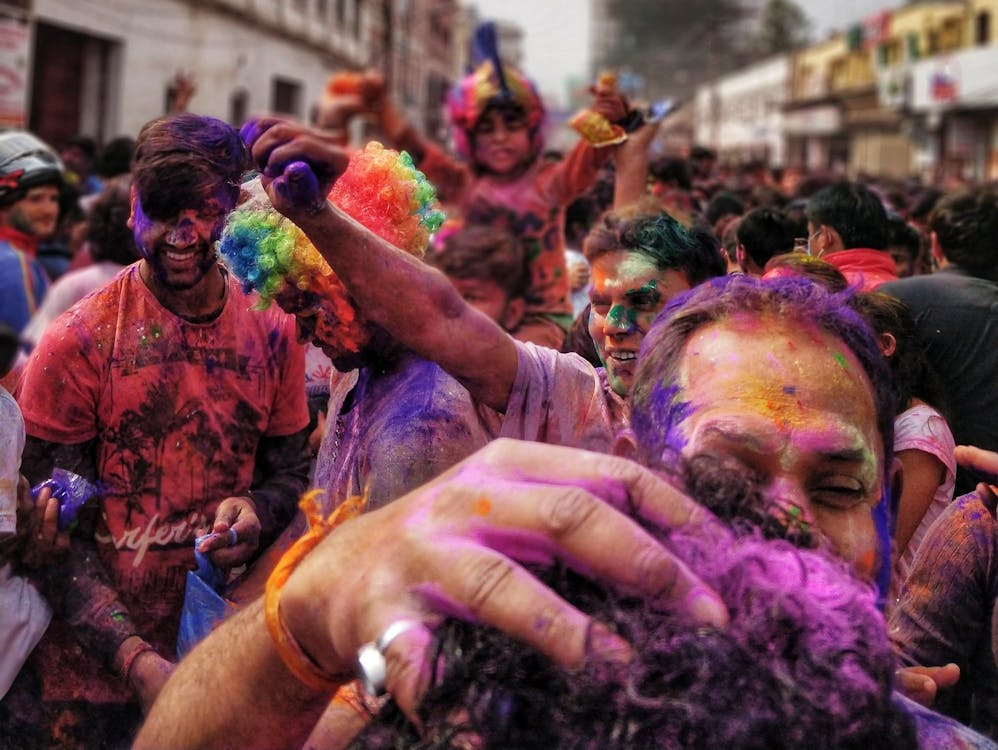

Holi - The Festival of Colors

Holi, known as the festival of colors, is one of the most vibrant and joyous festivals celebrated in India and across the world. It marks the arrival of spring and the victory of good over evil.
History and Significance
Holi has its roots in Hindu mythology, primarily the legend of Prahlada and Holika. Prahlada, a devotee of Lord Vishnu, was saved from his evil aunt Holika, who was burned in fire while he remained unharmed. This symbolizes the triumph of good over evil.
How Holi is Celebrated?
The celebrations begin with Holika Dahan, where people gather around bonfires and pray for the destruction of evil forces. The next day, people play with colors, water balloons, and enjoy festive delicacies like gujiya and thandai.
Holi Around the World
While Holi is mainly celebrated in India and Nepal, it has gained popularity worldwide, with large celebrations in countries like the USA, UK, Australia, and Canada. People of different cultures come together to enjoy the festivities.
The Legend of Holi: A Mythological Perspective
Holi is deeply rooted in Hindu mythology. One of the most famous legends is the story of Prahlada and Holika. Prahlada, a devoted follower of Lord Vishnu, was constantly tormented by his father, King Hiranyakashipu, who was against his devotion. The king’s sister, Holika, tricked Prahlada into sitting on a pyre with her while she wore a fireproof cloak. However, due to divine intervention, the cloak flew onto Prahlada, saving him, while Holika burned to ashes. This event symbolizes the victory of good over evil and is celebrated through Holika Dahan, where bonfires are lit to commemorate this triumph. Another important legend is the divine love of Radha and Krishna. Lord Krishna, who had a dark complexion, was worried about whether Radha would accept him. His mother playfully suggested that he apply color on Radha’s face, which later became a tradition. This is why Holi is also seen as a celebration of love and joy.
Holika Dahan: The Ritual of Bonfire
The night before Holi, people gather to perform Holika Dahan, which involves lighting a bonfire. This ritual represents the burning away of negativity, evil forces, and old grievances. People throw wood, dry leaves, and sometimes even crops into the fire as a symbolic gesture of letting go of their past troubles.
Holi - The Festival of Colors 🎨
Holi, known as the festival of colors, is one of the most vibrant and joyous festivals celebrated in India and across the world. It marks the arrival of spring and the **victory of good over evil**.
🌟 The Mythological Legends Behind Holi
Holi has deep roots in Hindu mythology, with the most famous being the story of Prahlada and Holika. Prahlada, a devotee of Lord Vishnu, survived a fire set by his evil aunt Holika, symbolizing the **triumph of good over evil**.
"The colors of Holi are not just about fun, but about spreading love, positivity, and new beginnings!"
🔥 Holika Dahan: The Night Before Holi
The evening before Holi, people gather for **Holika Dahan**, where bonfires are lit to signify burning away negativity and welcoming happiness.
🌍 Holi Celebrations Around the World
- Barsana, India: Women playfully chase men with sticks in **Lathmar Holi**.
- Jaipur, India: The royal Holi celebrations involve elephants and cultural performances.
- USA & UK: Holi events feature Bollywood music and eco-friendly colors.
🍽️ Traditional Holi Foods You Must Try
- Gujiya: A delicious sweet dumpling filled with khoya and dry fruits.
- Thandai: A spiced milk drink often mixed with **bhang**.
- Dahi Bhalla: Lentil dumplings soaked in curd with spices.
🎭 Tips for a Safe & Eco-Friendly Holi
- Use **organic colors** instead of chemical-based powders.
- Apply **coconut oil** to protect your skin and hair.
- Play **dry Holi** to save water.
- Respect animals by not throwing colors at them.
📩 Holi Wishes & Greetings to Share
Spread Holi joy by sending these messages:
🌈 “May your life be as colorful as Holi. Wishing you a joyous and safe Holi!”
🎊 “Throw away worries, embrace happiness, and play with colors! Happy Holi!”
Holi Wishes and Greetings
Spread the joy of Holi by sending wishes to your loved ones. Enter your name below and share Holi greetings on WhatsApp.
Share on WhatsApp